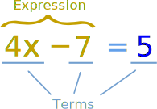

With supporting text below as a natural lead-in to additional content.
The infinite sum is equal to the real number . # Algebra ## Algebra ### Algebra - Definitions x + 2 = 6 ### Introduction to Algebra x − 2 = 4 x = 6 Work out what to remove to get "x = ..." Remove it by doing the opposite (adding is the opposite of subtracting) Do that to both sides #### What is an Equation _An equation says that two things are equal. It will have an equals sign "=" like this:_ `x + 2 = 6` That equation says: `what is on the left (x + 2) is equal to what is on the right (6)` So an equation is like a statement "this equals that" #### Parts of an Equation  So people can talk about equations, there are names for different parts (better than saying "that thingy there"!) Here we have an equation that says `4x − 7 equals 5`, and all its parts: `4x-7=5`: `4 is coefficient`, `x is variable`, `7 and 5 constant`, `- is operator` A Variable is a symbol for a number we don't know yet. It is usually a letter like x or y, but can be a symbol or word. A number on its own is called a Constant. A Coefficient is a number used to multiply a variable (`4x means 4 times x, so 4 is a coefficient`) Variables on their own (without a number next to them) actually have a coefficient of 1 (`x is really 1x`) Sometimes a coefficient is a letter like a or b instead of a number: `Example: ax2 + bx + c` * `x` is a variable * `a` and b are coefficients * `c` is a constant\ An Operator is a symbol, like +, ×, etc, that shows an operation. It tells us what to do with the value(s). `4x-7=5: 4x-7 `is `expression`, `4x, 7 and 5` are `terms` A Term is either a single number or a variable, or numbers and variables multiplied together. `An Expression` is `a group of terms` (the terms are separated by + or − signs) So now we can say things like "that expression has only two terms", or "the second term is a constant", or even "are you sure the coefficient is really 4?" Exponents The exponent (such as the 2 in x2) says how many times to use the value in a multiplication. `8 to the Power 2` Examples: Math.pow(8, 2) = 8 × 8 = 64 y^3 = y × y × y y^2z = y × y × z Exponents make it easier to write and use many multiplications Example: y4z2 is easier than y × y × y × y × z × z Polynomial Example of a Polynomial: 3x2 + x − 2 A polynomial can have constants, variables and the exponents 0, 1, 2, 3, .... But it never has division by a variable. polynomial Monomial, Binomial, Trinomial There are special names for polynomials with 1, 2 or 3 terms: monomial, binomial, trinomial Like Terms Like Terms are terms whose variables (and their exponents such as the 2 in x2) are the same. In other words, terms that are "like" each other. (Note: the coefficients can be different) Example: 6xy2 −2xy2 (1/3)xy2 Are all like terms because the variables are all xy2 ## ETC ### Conversion of Temperature - Celsius to Fahrenheit ### Definition of Additive Inverse ### Definition of Coefficient ### Definition of Constant ### Definition of Expression ### Definition of Inverse ### Definition of Inverse Operation ### Definition of Number Pattern ### Definition of Operator ### Definition of Pattern ### Definition of Problem ### Definition of Reciprocal ### Definition of Variable ### Equations and Formulas ### Introduction to Algebra - Multiplication ### Introduction to Interest ### Inverse ### Number Sequences - Square, Cube and Fibonacci ### Open Sentences ### Order of Operations - BODMAS ### Order of Operations - PEMDAS ### Order of Operations Calculator ### Patterns ### Reciprocal ### SequencesEx ### Shapes Freeplay ### Smart Blocks ### Solving Word Questions ### Substitution ### Definition of Power ## Exponents ### Exponents ### Exponents ### Index Notation - Powers of 10 ### Laws of Exponents ## Coordinates ### Alien Mask From Coordinates ### Cartesian Coordinates ### Coordinates and the 4 Quadrants ### Definition of Point ### Definition of Quadrant (graph) ### Diplodocus Using Coordinates ### Hit the Coordinate ### Interactive Cartesian Coordinates ### Point ### Tyrannosaurus Rex Picture by Plotting Coordinates ## Linear Equations ### Add Two Numbers and the Answer is Always 1089 ### Introduction to Algebra ### Introduction to Algebra - Multiplication ### Why the Answer is Always 1089 ## Logic ### Definition of Problem ### Learning Mathematics ### The Language of Mathematics ### Welcome to Mathematics Go somewhere